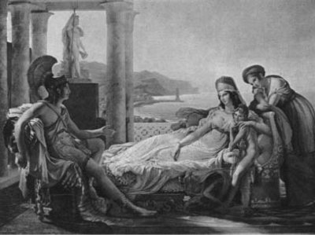

Troya surlarını aşamayan Agamemnon'un orduları, hem yaşamlarını sürdürebilmek için yiyecek içecek, hem de altın, kadın-kız türünden ganimetler talanlamak için çevredeki kentlere çapulculuk baskınları da düzenliyorlardı. Devşirip getirdikleri ganimetleri ve güzel kadınları, aslan payı Başkral Agamemnon'da kalmak üzere, bir tanrı elçisinin gözetiminde paylaşıyorlardı.
Bu paylaşımların birinde savaş ganimeti güzel Briseyis'i onur payı olarak Ahilleus'a sundular. Ahilleus da bu güzel köleyi çok sevdi; kendisine sevgili edindi. Ne var ki Başkral Agamemnon; bir süre sonra Briseyis'i kavga-dövüş alıp kendi çadırına götürdü. Bu olayı onuruna yediremeyen Ahilleus, Başkral'a küfürler yağdırdı uzun uzun. Sonra da; "Ben sırf sen hazineler, güzel kadın köleler derleyesin diye mi geldim buraya? Troyalılar bana ne kötülük etti de onlarla savaşacağım?!" deyip çadırına çekildi.
Çok kısa bir süre sonunda da Agamemnon, Ahilleus olmadan Troya savaşını kazanmanın olanaksızlığını çok iyi anladı. Bu yüzden de en sözü geçer elçiler yollayıp onu yeniden savaş alanına döndürmenin yollarını aramaya başladı. Ama Ahilleus nal diyor mıh demiyordu; artık savaşa katılmayacaktı! Ne var ki yıllar içinde Akhalı orduların Troyalılar önünde çok büyük bozgunlar yaşamaları üzerine, kendisine savaşa katılması için sürekli yalvaran bazı elçilerin hatırını kıramadı Ahilleus; kendi yerine can dostu Patroklos'u göndermeye razı oldu. Savaş alanına gönderirken de, tanrıların armağanı kendi özel silahlarıyla donattı onu...
Troya kralı iyi yürekli Priyamos'un oğlu komutan Hektor; Yunanlı komutan Ahilleus'un kendi yerine savaşa gönderdiği can dostu Patroklos'u daha ilk gün teke tek dövüşte öldürdü... Sonra da üstündeki Ahilleus'un armağan ettiği tanrı yapısı silahlara el koydu... Bunun üzerine anlatılmaz bir yasa ve öfkeye kapılan Ahilleus büyük bir hışımla can dostunun öcünü almak üzere savaşa katılmaya karar verdi. Ve hemen sahile inip Hektor'un el koyduğu Patroklos'un sırtındaki silahların yerine yeni silahlar yaptırması için deniz dibindeki sarayında oturan anası tanrıça Tetis'i çağırdı yanına ağlaya sızlaya.
Anası denizkızı Tetis de köpükler saça saça püskürüp geldi denizin dibinden... Durmadan hıçkıran Ahilleus, derdini zar zor anlatabildi anasına. Bunun üzerine Tetis, oğlu Ahilleus'a bir süre beklemesini; kendisinin yokluğunda kesinlikle savaşa katılmamasını öğütledi. Yeni silahlar dövdürmek üzere hemen havalandı ve hızla Olimpos'taki tanrılar ülkesine doğru bulutların arasında süzülüp gitti...
Silahları ve savaşları hiç sevmemesine karşın tanrıça güzel Tetis, güçlü silahlarla donatırsam oğlumun ölümünü belki de geciktirebilirim, diye düşünüyordu. Çok sevdiği demirci topal tanrı Hefaystos'un işliğine gitti doğruca... Bir zamanlar bu topal tanrının anası tanrıça Hera, diğer tanrıçalar topallığıyla alay ediyor diye, Olimpos'taki sarayının penceresinden yıldızlarla kaynaşan o büyük boşluğa fırlatıp atıvermişti onu! Hefaystos da yıldızlardan yıldızlara savrularaktan Ege denizine çakılmış, sulara gömülmüştü. Denizkızı tanrıça Tetis de denizin dibindeki sarayına yakın yerde onu yara bere içinde bulmuş; sonra da yıllarca analık etmişti ona. Yeraltındaki büyük demirci işliklerindeki demirci Tepegözlerin yanına çıraklığa da vermişti... Bir sanat öğrensin, öğrendiklerini de içinde yaşadığı bu dünyanın acılı insanlarına aktarsın, onların yaşamını güzelleştirsin diye... Gerçekten de topal tanrı demirci Hefaystos, tanrıça Atena'yla birlikte bütün işçileri eğiten ve yönlendiren tanrılara dönüşeceklerdi... Tanrıça Atena kadınlara örgü örmeyi, kumaş dokumayı öğretecekti. Hefaystos da işçilere, madenlerden insanlığa en yararlı aletler üretme hünerini öğretecekti.
O yüzden demirci işliğinde demir döverken tanrı Hefaystos; iyi yürekli tanrıça Tetis'in kendine doğru geldiğini görünce elindeki çekici bıraktı hemen! Terli yüzünü, boynunu bir süngerle silip topallaya topallaya, doğruca yanına gitti. Büyük bir sevecenlikle sarıldı tanrıça Tetis'e ve onu can kulağıyla dinlemeye başladı. Durumu anlayan Hefaystos; "Oğlun Ahilleus için delinmez bir kalkan ve başka silahlar da döveceğim. Beni burada bekle..." dedi ve doğruca demirci işliğine döndü.
İşçilerin ve sanatçıların sadık tanrısı demirci topal Hefaystos, hemen hemen hiç silah üretmezdi demirci işliğinde... Yalnızca insanlara yararlı olacak aygıt ve otomatlar üretmekle ve bu konudaki bildiklerini, becerilerini sanatçılara aktarmakla geçirirdi zamanını.
Ne var ki bir ana olarak benimsediği tanrıça Tetis'i de kesinlikle kıramazdı... O yüzden döveceği silahlar konusunu biraz düşündü... Sonra da hiçbir mızrağın delemeyeceği, kat kat çelikten bir kalkan dövdü. Onun üstüne de ressamlara bile parmak ısırtacak renk renk desenler, resimler işlemeye başladı. Yeri göğü, tekmil denizleri yerleştirdi kalkanın üstüne. Gökyüzünde ateşböcekleri gibi kaynaşan yıldızları ve her gün orada koşmaktan yorulmayan güneşin atlarını da resimlemeyi unutmadı. Kalkanın sağ köşesine, kahramanlıkları ve özverileri karşısında tanrıların bile hayran olup ölümsüz yıldız takımlarına dönüştürdüğü kahramanların resimlerini çizdi maden uçlu kalemiyle... Kalkanın sol köşesine de, iki güzel kentteki insanların yaşamlarını betimleyen sahneler resimleyip dövdü... Bu kentlerden biri; şen şakrak düğünler, şölenler içindeydi... Çıra ışığında evlerinden alınıp ağır ağır gezdirilen gelinler vardı sokaklarda. Gitar, flüt sesleri eşliğinde, hasret yüklü kavuşma türküleri geliyordu dört bir yandan... Delikanlılar el ele tutuşmuş, ayaklarını yerlere vura vura oyunlar oynuyor, halaylar çekiyorlardı. Ve meydanın az ötesindeki genç kızlar da, süzgün bakışlı gözleriyle onları izliyor ve ellerini bir uyum içinde birbirine vura vura şaklatıyorlardı... Ama ikinci kentin surları önünde, birbirine hasım iki ordu pusuya yatmış, öylece bekliyordu... Erlerin silahları pırıl pırıl yanıyordu dolunayın altında. Bu iki hasım ordu; ya kentin varını yoğunu ikiye bölüp barışacaklar ya da içindeki masum çocuklarla, analarla, yaşlılarla birlikte baştan sona yıkıp yakacaklardı... Hefaystos'un hiç sevmediği savaş tanrısı Ares de, hemen savaşın başlaması için iki ordu arasında habire mekik dokuyor, onları kışkırtmaya çalışıyordu. Ama surların arkasındaki çoluk-çocuğun, yaşlıların tümü de olup bitenlerden habersizdi.
Hefaystos; elindeki kalkanın alt köşesine, iri iri salkımlarla, çeşit çeşit meyvelerle yüklü ve köylülerin dikip yetiştirdikleri, ürünlerini birlikte toplayıp bölüştükleri kocaman bir bağ yerleştirdi. Kara kara üzüm salkımları bile açık seçik görülüyordu kalkanın üstünde. Gümüş bir çitle çevrili bu bağın ortasında da tek bir yol vardı ta köye dek uzanan... Köyün genç kızları ve delikanlıları; bağbozumu başladığında, bu yolda şarkılar söyleyerekten yürüyorlar ve bahçeye geliyorlardı. Bahçede topladıkları bal gibi üzümleri kardeşçe bölüşmek üzere, köy meydanına sepet sepet omuzlarında taşıyorlardı. Omuzlarındaki üzüm dolu sepetlerle yürüyen bu şen şakrak gençler, insanlığın Altınçağını dillendiren ezgiler söylüyorlardı... Onların ortalarında da bir çocuk, elindeki sazla ve incecik sesiyle, arada bir türkü tutturuyor; büyüyünce gerçekleştirmek istediği savaşsız ve mutlu bir dünyadan söz ediyordu. Omuzları üzüm sepetli genç kızlar da çocuğun türküsü bitince, o andaki güzel birlikteliklerinden duydukları mutluluğu dillendiren yeni bir ezgiye başlıyorlardı... Sepetlerini meydana boşalttıktan sonra da kızlı erkekli bu gençler, el ele tutuşup oyunlar oynuyor, ıslık çala çala, gelecek yıl gene birlikte olacaklarını söylüyorlardı. Bu arada ayaklarını da habire uyuyan toprağa vuruyor, onu uyandırıp şölenlerine ortak ediyorlardı...

Hektor, karısı ve çocuğuyla birlikte
Hefaystos böyle böyle daha pek çok resimle birlikte, acılı dünyamızdaki insanların gerçekleştireceği mutlu yaşamları dillendiren iç içe görüntüler resimlemeyi de unutmadı... Ve kimsenin delemeyeceği bu kalkanı bitirdikten sonra, Ahilleus'un başını kulaklarına dek örtecek sağlam bir tolgayla iki dizlik ve tunçtan bir kargı dövdü örsün üstünde. Sonra da bütün bu dövdüklerini, doğruca ayağı gümüş halhallı tanrıça güzel Tetis'in yanına götürdü soluk soluğa...
Tanrıça Tetis de hemen bir ana gibi boynuna atıldı tanrı Hefaystos'un! Getirdiği silahları sevinçle aldı. Biraz hoş beş ettikten sonra tanrıça Tetis, bir zıplayışta ışıl ışıl yanıp sönen yıldızların içine attı kendini... Yıldızları okşaya okşaya ve süzülerekten, Troya'da onu dört gözle bekleyen oğlu Ahilleus'un yanına indi usulca... Ve Ahilleus da anasının getirdiği pırıl pırıl yanan silahları kuşanmaya başladı hemen... Kuşanır kuşanmaz, karşısındaki Kazdağları'nı bile sarsan ve oradaki kurtları kuşları titreten naralar atmaya başladı!.. Bu naraları duyan asker arkadaşları onun sesini hemen tanıdılar ve sevinçten başlarındaki tolgaları havaya atıp atıp kapıştılar... Ne var ki aynı sesi tanıyan hasım Troyalı askerlerin içlerini de, buz gibi soğuk bir korku kasırgası sardı aniden... Çünkü Ahilleus'un savaşa katılmadığı zaman içinde Troyalılar, Yunanistanlı Akhaları bozgun üstüne bozguna uğratmışlardı... Bu yüzden nice yiğitlerini yitirmişti Yunanlılar... Kalanların çoğu da yaralıydı. Hatta Başkral Agamemnon'un baldırını da Troyalı bir askerin fırlattığı tunç bir kargı yırtıp geçmişti!..
Naraları duyan Yunanlı askerler, Ahilleus'u karşılamak üzere sahilde apar topar toplanmaya başladılar. Başkral Agamemnon da koşaraktan geldi oraya. Tekmil Akhalar bir araya gelince, silahlarından ışıltılar saçan Ahilleus, oradaki bir kayanın üstüne çıkıp; "Ne dersin, Agamemnon, birbirimizin arasına öfke sokmakla iyi mi ettik?" diye bağıra bağıra konuşmaya başladı. "Sen benim sevdiğim ve onur payı olarak bana verilen Briseyis'i zorla elimden alıp barakana götürdün! Ben de artık savaştan çekildiğim için, düşman oklarıyla yerlere yıkılan nice askerimiz, toprağı dişleye dişleye yok olup gittiler... Ne gerek vardı bütün bunlara? Gelecek kuşaklar hep bunları anlatacaklar birbirlerine... Ama olanlar oldu... Ben artık bu öfkeme burada son veriyorum!.."
Ve Agammnon'a hemen savaşa başlayalım çağrısında bulundu. Ardından söz alan Agamemnon da, olup biten bütün bu üzücü olayların nedenini tanrılara bağladı... Baştanrı Zeus sırf kötülük olsun diye Çılgınlık denen öz kızı tanrıça Ate'yi onun başına salmış, bir süreliğine de olsa aklını başından aldırmıştı! İşte bu yüzden Briseyis'i saygısızca çadırına alıp götürmüştü... Artık bu saygısızlıktan çok pişman olduğunu açıkladı biraz ezile büzüle... Savaşa katıldığı için daha önce sözünü ettiği armağanları eksiksiz çadırına göndereceğini söyledi. Sevgilisi Briseyis'i de geri vereceği gibi ayrıca başka köle kadınlar da sunacaktı ona... Ve bu arada Briseyis'in yatağına bir kez bile çıkmadığı konusunda Cehennem'in Stiks Irmağı üzerine ant üstüne ant içti!.. Bu sözlerinin ardından orada tören için hazır bekleyen semiz bir domuzun boğazını tunç bıçakla kesti hemen. Yere akan kandan bir parmak alıp hem kendi, hem de Ahilleus'un alnına sürdü...
Törenden sonra Akhalı askerler ve komutanlar dağıldılar. Bu arada Agamemnon sözünü ettiği armağanları Ahilleus'un çadırına gönderdi. Tabii bütün öfkelerin ve bunca kırımın nedeni olan ve zorla Ahilleus'un elinden aldığı Afrodit'e benzer güzel Briseyis'i de yolladı. Üstelik onun yanına beş güzel köle kız daha ekledi! Briseyis, Ahilleus'un çadırında Patroklos'un sivri tunçla delinmiş ölü bedenini görünce çığlıklar attı; üstüne kapandı. Sonra göğsünü, yüzünü yoldu; giysilerini paraladı çığlıklar ata ata... Yaktığı dokunaklı ağıtlar arasında, buraya köle olarak gelmeden önce başına gelenlerden söz etti yana yakıla... Troya'ya bağlı bir kentin kralı olan babasını, anasını ve üç erkek kardeşini bir yağma savaşı sırasında şimdi sevgilisi olan Ahilleus öldürmüştü. Üstelik kocasını da o yağma hengâmesinde ölü bulmuştu... İşte o acılar içinde kıvrandığı sırada, Ahilleus'un yanından ayırmadığı can dostu Patroklos onu avutmaya çalışmış; "Seni Ahilleus'un karısı yapacağım!" diye söz vermişti. Üstelik Briseyis'i gemilerle Ahilleus'un kral olduğu ülkeye alıp götüreceğini de söylemişti. "İşte sen beni hep böyle sözlerle avutmaya çalışıyordun, sevgili Patroklos!" dedi hıçkıra hıçkıra...
Güzel Briseyis böyle böyle Patroklos'un ölüsü başında yas tutarken, diğer beş köle kız da gözyaşları döküyordu sessiz sessiz... Bu gözyaşları görünüşte Patroklos içindi. Ama gerçekte her köle kız, kendi derdine ağlıyordu.
Çünkü onlar buraya getirilmeden önce çocuklarını, kocalarını, ana-babalarını, en yakınlarını yitirmişlerdi; evleri, barakaları ateşe verilmişti...